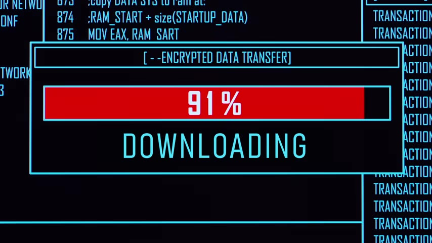
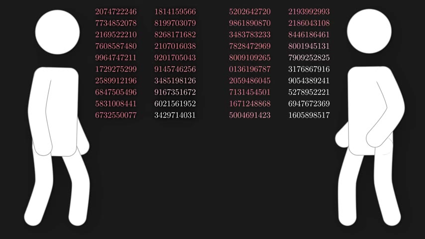
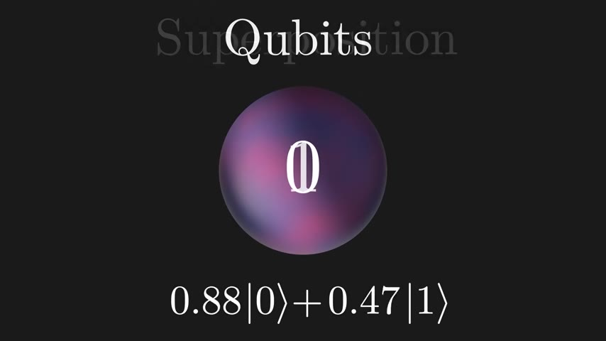
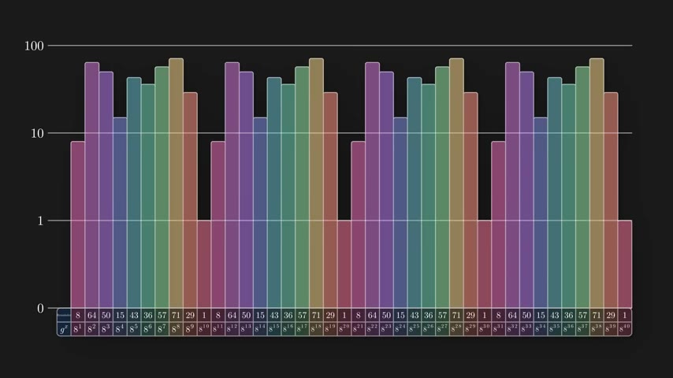
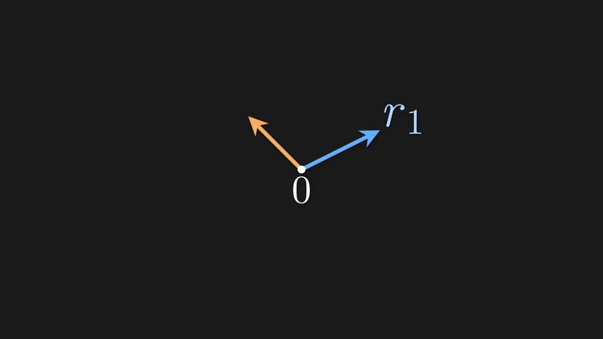
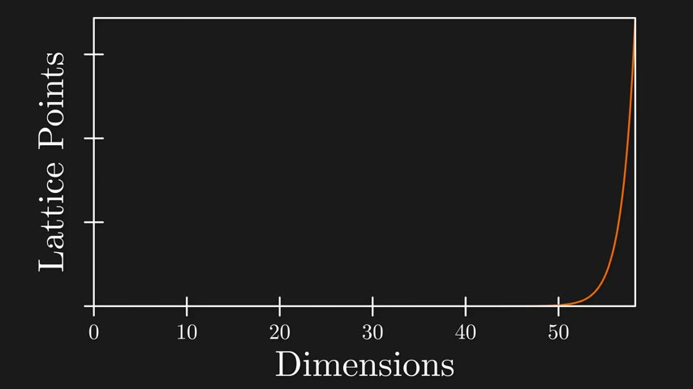

Nation-states are hoarding your encrypted data right now, betting that a powerful enough quantum computer will arrive within the next decade. The race to break—and then rebuild—encryption has begun.
Watch on YouTubeNation-states and individual actors are intercepting and storing massive amounts of encrypted data today — passwords, bank details, social security numbers — even though they can't open any of it yet. Their motivation is simple: within the next 10 to 20 years, they expect to have access to quantum computers capable of breaking encryption in minutes.

The National Security Agency has publicly stated that a sufficiently large quantum computer would be capable of undermining all widely deployed public key algorithms. Congress responded by mandating that all U.S. agencies begin transitioning to quantum-resistant cryptography immediately.
A sufficiently large quantum computer, if built, would be capable of undermining all widely deployed public key algorithms.— NSA (via video)
Until the 1970s, private communication required meeting in person to share a secret key — a symmetric key algorithm. The breakthrough came in 1977 when three scientists — Rivest, Shamir, and Adleman — figured out how to encrypt without a pre-shared key.

Every person has two large prime numbers they keep secret, multiplies them to get a public number, and publishes that for anyone to use. To send a private message, you garble it with the recipient's public number in a way that's impossible to reverse without knowing the original prime factors.
This is an asymmetric key system — easy to encrypt, nearly impossible to decrypt without the secret primes. Modern cryptography uses prime numbers around 313 digits long. Factoring such a product on a classical supercomputer would take roughly 16 million years.
It's easy for my intended recipient to decode, but impossible for everyone else, unless they can factor that large public number.— Speaker
Classical bits are either zero or one. A pair of bits can be in one of four states at a time. But qubits can exist in a superposition of both zero and one simultaneously — meaning two qubits can process four states at once.

Add a qubit and you double the computational space. With 20 qubits, you can represent over a million states simultaneously. With 300 qubits, more states than there are particles in the observable universe.
There's a critical catch, though: you can't simply read out all those answers. Measuring a superposition gives you one random value and destroys everything else. Quantum algorithms must be clever enough to transform the superposition so that the one answer you get is the right one.
In 1994, Peter Shor and Don Coppersmith figured out how to use quantum computers to factor large numbers — precisely the problem that makes RSA secure. The algorithm works by finding a hidden periodic pattern.
The approach starts with a simple number theory observation: if you pick a number g and keep multiplying it by itself, the remainders when divided by N will always eventually cycle back. The period of that cycle is the key to finding N's factors.
On a quantum computer, the algorithm prepares a superposition of all possible exponents simultaneously, computes the remainder pattern for all of them at once, then measures just the remainder — which collapses the superposition into a periodic pattern. Applying the quantum Fourier transform extracts the period from that pattern, and the period reveals the factors.

If we apply the quantum Fourier transform to this superposition of states, we will be left with states containing one over R.— Speaker
Because the threat has been known for decades, cryptographers have been developing encryption schemes that resist both classical and quantum attacks. In 2016, NIST launched a competition for post-quantum algorithms. Out of 82 proposals, four were standardized in July 2022 — three of which are based on lattice mathematics.

The idea: a lattice is a grid of points generated by combining basis vectors in integer multiples. Given "nice" (short, nearly orthogonal) basis vectors, finding the closest lattice point to a target is easy. But given "messy" (long, skewed) basis vectors describing the same lattice, the problem becomes exponentially hard.
In a thousand dimensions, taking a step toward the answer along one axis throws you off along all the others. There's no shortcut — even for a quantum computer.
You win some, you lose everything else.— Speaker
Estimates for the number of physical qubits needed to break RSA have plummeted: a billion in 2012, 230 million five years later, and 20 million by 2019. Current quantum computers have nowhere near that many quality qubits, but progress is exponential on both sides.

The critical question: when will the two curves collide — the qubit count of advancing quantum computers meeting the threshold needed to break RSA? No one knows for sure, but the window for switching to post-quantum cryptography is closing.
Behind the scenes, an army of researchers, mathematicians, and cryptographers is working to ensure your secret data stays secret. These are the people who will keep us safe moving forward — avoiding mass surveillance by governments, protecting critical infrastructure, and letting us live as if quantum computers were never invented.
Behind the scenes, there's an army of researchers, mathematicians, and cryptographers, we're gonna make sure your secret data stays secret. These are some of the unsung heroes that will keep us safe moving forward.— Speaker
:::